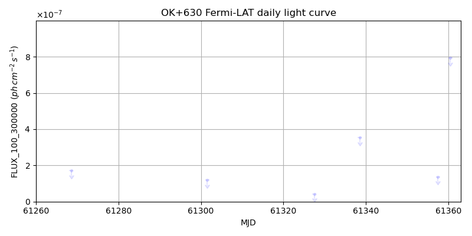
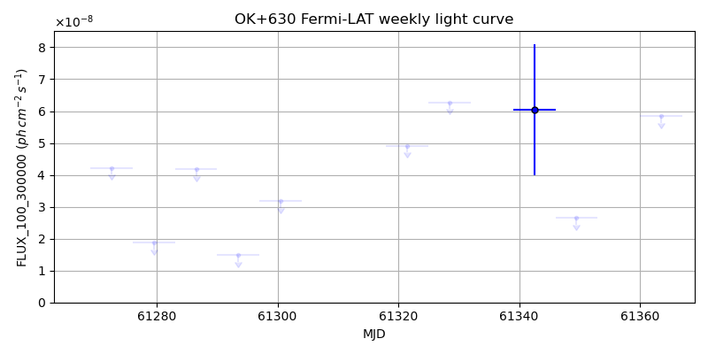
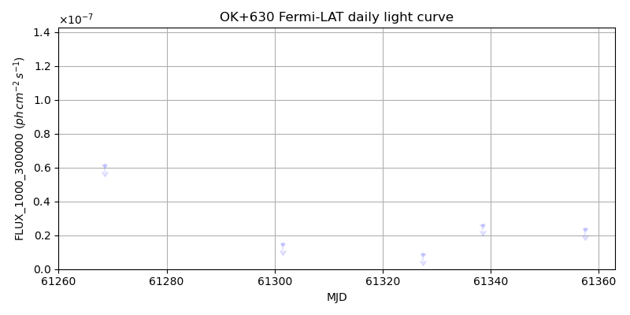

LAT Lightcurve site: https://fermi.gsfc.nasa.gov/ssc/data/access/lat/msl_lc/source/OK_p630
NED: Query
Time of last update of this page: UT: 2026-11-20 16:20 (MJD: 61364.681)
| Property | Value |
|---|---|
| R.A. | 9:21:36.24 |
| Dec. | 62:15:50.4 |
| z | 1.458 |
| 3FGL SpectrumType | |
| 3FGL PL Index | -1.00 |
| 3FGL Flux_100_300000 | -1.00e+00 |
| 3FGL Flux_1000_300000 | -1.00e+00 |
| 3FGL Flux >200 GeV | -1.00e+00 |
| 3FGL Extrap. Crab >200 GeV | -1.00 |
| 3FGL Flux After EBL Absorption >200GeV | -1.00e+00 |
| 3FGL EBL Crab Fraction >200GeV | -1.00 |

| MJD | dMJD | Flux | dFlux | Frac3FGL | FracCrab>200GeV | EBLFracCrab>200GeV |
|---|---|---|---|---|---|---|
| 61301.50 | 0.50 | 1.20e-07 | 0.00e+00 | 0.00 | 0.00 | -0.00 |
| 61327.50 | 0.50 | 4.21e-08 | 0.00e+00 | 0.00 | 0.00 | -0.00 |
| 61338.50 | 0.50 | 3.54e-07 | 0.00e+00 | 0.00 | 0.00 | -0.00 |
| 61357.50 | 0.50 | 1.37e-07 | 0.00e+00 | 0.00 | 0.00 | -0.00 |
| 61360.50 | 0.50 | 7.94e-07 | 0.00e+00 | 0.00 | 0.00 | -0.00 |

| MJD | dMJD | Flux | dFlux | Frac3FGL | FracCrab>200GeV | EBLFracCrab>200GeV |
|---|---|---|---|---|---|---|
| 61321.50 | 3.50 | 4.91e-08 | 0.00e+00 | 0.00 | 0.00 | -0.00 |
| 61328.50 | 3.50 | 6.27e-08 | 0.00e+00 | 0.00 | 0.00 | -0.00 |
| 61335.50 | 3.50 | 1.08e-07 | 0.00e+00 | 0.00 | 0.00 | -0.00 |
| 61342.50 | 3.50 | 6.04e-08 | 0.00e+00 | 0.00 | 0.00 | -0.00 |
| 61349.50 | 3.50 | 2.65e-08 | 0.00e+00 | 0.00 | 0.00 | -0.00 |

| MJD | dMJD | Flux | dFlux | Frac3FGL | FracCrab>200GeV | EBLFracCrab>200GeV |
|---|---|---|---|---|---|---|
| 61301.50 | 0.50 | 1.46e-08 | 0.00e+00 | 0.00 | 0.00 | -0.00 |
| 61327.50 | 0.50 | 8.49e-09 | 0.00e+00 | 0.00 | 0.00 | -0.00 |
| 61338.50 | 0.50 | 2.61e-08 | 0.00e+00 | 0.00 | 0.00 | -0.00 |
| 61357.50 | 0.50 | 2.34e-08 | 0.00e+00 | 0.00 | 0.00 | -0.00 |
| 61360.50 | 0.50 | 4.25e-07 | 0.00e+00 | 0.00 | 0.00 | -0.00 |
| MJD | dMJD | Flux | dFlux | Frac3FGL | FracCrab>200GeV | EBLFracCrab>200GeV |
|---|---|---|---|---|---|---|
| 61321.50 | 3.50 | 3.95e-09 | 0.00e+00 | 0.00 | 0.00 | -0.00 |
| 61328.50 | 3.50 | 7.84e-09 | 0.00e+00 | 0.00 | 0.00 | -0.00 |
| 61335.50 | 3.50 | 6.67e-09 | 0.00e+00 | 0.00 | 0.00 | -0.00 |
| 61342.50 | 3.50 | 6.04e-09 | 0.00e+00 | 0.00 | 0.00 | -0.00 |
| 61349.50 | 3.50 | 2.38e-09 | 0.00e+00 | 0.00 | 0.00 | -0.00 |
--------------------------------------------------------- Using user-supplied coords: 9:21:36.24 62:15:50.4 2000 --------------------------------------------------------- FLWO UT night of: 2026-11-21 Local Sid. @ Midnight: 03:37 Sunset (-15.0) (local, UT): 18:33 01:33 Sunrise (-15.0) (local, UT): 05:47 12:47 Moonrise (local, UT): Moonset (local, UT): 03:40 10:40 Moon phase: 0.85 --------------------------------------------------------- AzTime LSID UT Obj_el Obj_az Mn_el Mn_az Sep. --------------------------------------------------------- 18:33 22:09 01:33 4.4 5.3 47.9 117.4 101.3 19:03 22:39 02:03 5.2 8.7 53.3 125.0 101.2 19:33 23:09 02:33 6.3 12.1 58.2 134.7 101.0 20:03 23:39 03:03 7.8 15.2 62.3 146.9 100.8 20:33 00:09 03:33 9.6 18.3 65.1 162.1 100.6 21:03 00:39 04:03 11.8 21.1 66.3 179.7 100.4 21:33 01:09 04:33 14.2 23.7 65.4 197.5 100.3 22:03 01:39 05:03 16.9 26.0 62.9 213.2 100.1 22:33 02:09 05:33 19.8 28.1 59.0 225.9 99.9 23:03 02:39 06:03 22.9 29.9 54.2 235.9 99.8 23:33 03:09 06:33 26.2 31.3 48.9 243.9 99.6 00:03 03:39 07:03 29.5 32.4 43.2 250.4 99.4 00:33 04:10 07:33 33.0 33.1 37.3 255.9 99.2 01:03 04:40 08:03 36.5 33.3 31.2 260.7 99.1 01:33 05:10 08:33 40.0 33.0 25.1 265.1 98.9 02:03 05:40 09:03 43.4 32.2 19.0 269.2 98.7 02:33 06:10 09:33 46.8 30.6 12.9 273.0 98.5 03:03 06:40 10:03 49.9 28.3 6.8 276.9 98.3 03:33 07:10 10:33 52.8 25.1 1.0 280.7 98.1 04:03 07:40 11:03 55.3 20.9 -4.9 284.7 97.9 04:33 08:10 11:33 57.4 15.7 -11.1 288.8 97.7 05:03 08:40 12:03 58.8 9.7 -16.8 293.2 97.5 05:33 09:10 12:33 59.5 3.0 -22.3 298.1 97.3 05:47 09:25 12:47 59.5 359.7 -24.8 300.5 97.2 --------------------------------------------------------- Dark hours >55 deg.: 1.81 srcstart (UT): 2026-11-21 10:58 srcend (UT): 2026-11-21 12:46